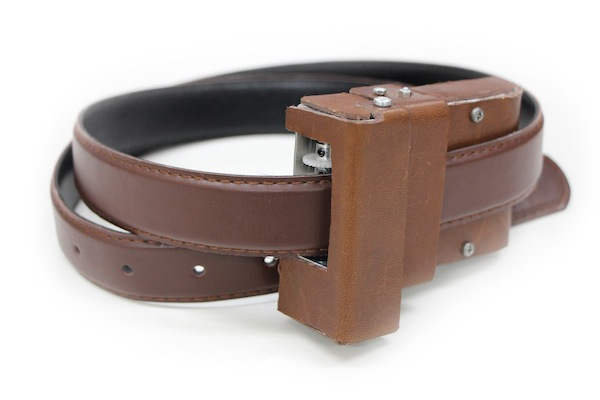
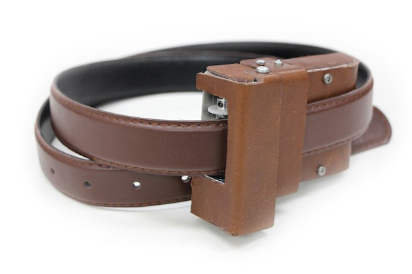

コンセプトベルトに付けるだけの新しいウェアラブルデバイス
お腹まわりが気になっても、測るのが面倒だからと見えないフリをしているあなたに。 「ベルトを身に着ける」だけであっという間にウエストを測定し、スマホで簡単に見ることができる。 そんな新しいウェアラブルデバイスを作りました。 
お腹まわりが気になっても、測るのが面倒だからと見えないフリをしているあなたに。 「ベルトを身に着ける」だけであっという間にウエストを測定し、スマホで簡単に見ることができる。 そんな新しいウェアラブルデバイスを作りました。 
メジャーでウエストを測定するのは、面倒です。 私たちは、ユーザの「ベルトを身に着ける」という動作からウエストを自動測定することで、この問題を解決しました。 「おなかのげんじつ」を使えば、測定のための余分な動作は不要です。
ベルトの装着方法を見る
「おなかのげんじつ」はBluetoothを通してペアリングしたスマホアプリに測定結果を送信します。1日のおわりには、あなたに通知でお知らせしてくれます。アプリを開けば、これまでの測定結果をグラフ上で見ることができます。
毎日の"悲しい"通知が、"嬉しい"通知へと変わるかどうか。
それはあなた次第です。
性別・身長・体重をそれぞれ入力すれば、メタボかどうかの判断など、様々な統計情報を見ることが出来ます。もしメタボと診断されたなら。サッと診断書を見せて飲み会をスマートに断りましょう。ウエスト管理は、このアプリにお任せ。
アプリの中であなたを見守ってくれるキャラクターのうえすトン。タップしてあげると、いつも優しく、時には厳しく、いつでもあなたを応援してくれます。うえすトンは、きっとみなさんの支えになってくれるでしょう。
「おなかのげんじつ」はOneDriveによるクラウド管理に対応。 エクセルファイルにも出力でき、データを確認する時間も、場所も自由です。 あなたの「おなかのげんじつ」に、立ち向かいましょう。
本プロダクトは「げんじつベルト」が必須となります。 アプリUIを体験するためのデモアプリは以下からダウンロードください。
apkファイルをダウンロード